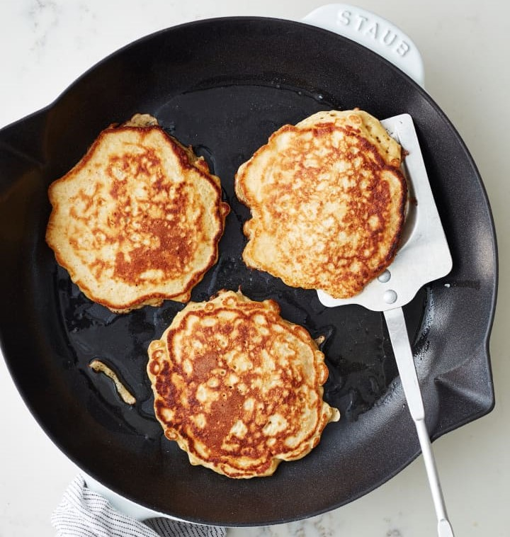

Oatmeal Pancakes - perfect breakfast

Description
Ingredients
- 1 cup old-fashioned rolled oats
- 1 cup milk, regular or non-dairy
- 2 large eggs
- 1 tablespoon unsalted butter, plus more for cooking
- 1 tablespoon granulated sugar
- 2/3 cup all-purpose flour
- 2 teaspoons baking powder
- 1/4 teaspoon kosher salt
Steps
- Whisk 1 cup rolled oats and 1 cup milk together in a large bowl. Let stand for 10 minutes for the oats to soften.
- Add warm butter, 2 eggs, and 1 tablespoon granulated sugar to the oats, and whisk to combine. Add 2/3 cup all-purpose flour, 2 teaspoons baking powder, 1/4 teaspoon kosher salt, and whisk until just combined; do not overmix. Let stand for 5 minutes more. Meanwhile, heat a large cast iron or nonstick skillet over medium-high heat.
- Add 1 teaspoon butter to the pan and swirl to coat.
- Drop the batter into the pan in 2-tablespoon portions, cooking 3 at a time.
- Cook until bubbles appear on the surface, the edges begin to look dry, and the bottoms are golden-brown, about 3 minutes.
- Flip the pancakes and cook until the other side is golden-brown, 2 to 3 minutes more.
- Transfer the pancakes to a warm oven or plate. Repeat cooking the remaining batter, using 1 teaspoon butter for each batch.